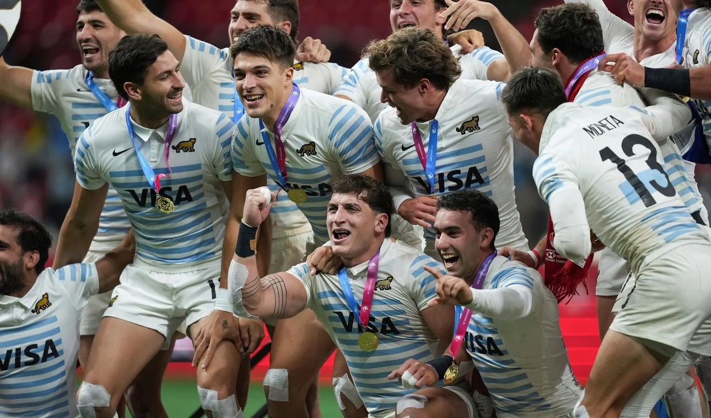

Los Pumas de Oro
La Selección ganó más que un título en Canadá: siguió macerando un proceso exitoso, que sueña con París 2024.
Hace varios años, Los Pumas 7’s decidieron abrir una autopista al futuro. Apostaron por cimentar un proyecto de selecciones nacionales a largo plazo y con un trabajo meticuloso para dejar de soñar únicamente de noche, sino también optaron por hacerlo de día para ser conscientes de que eran capaces de competir de igual a igual contra las principales potencias del mundo. Y si bien el proceso fue largo y sinuoso, con varios sube y bajas en el camino, la realidad es que Santiago Gómez Cora armó un plan exitoso que, a pesar de las constantes bajas (desde lesionados hasta los que optan por pasarse al rugby de XV), está dando sus frutos.
Tanto es así que el seleccionado nacional volvió a subirse el domingo a lo más alto del podio, luego de haber derrotado a Francia por 33 a 21 en la final del seven de Vancouver. En ese sentido, conquistó su segundo título de la temporada (el anterior se había dado en Hamilton, la tierra de los All Blacks), hecho que significó un hito para el rugby argentino porque se trató de la primera vez que lograron dos consagraciones en un mismo certamen.
“Una cosa es lograrlo una vez, pero volverlo a conseguir y mantenerlo en los últimos cuatro torneos, llegando a tres finales y llevarnos dos títulos es algo increíble. Ni soñándolo lo hubiésemos imaginado”, dijo el head coach a modo de balance.
Además, destacó el proceso que comanda desde 2013 y que este años cumplirá una década. “Es cuestión de mirar atrás, de pensar lo que se hizo, lo que se planificó. A mí me tocó llegar, analizar un poco el panorama los primeros años como entrenador y después descubrir que había que trazar un proyecto y pensar a largo plazo. No pensamos en buscar soluciones mágicas, ni a corto plazo, sino apuntar a algo que sea sostenible en el tiempo”, dijo.
Y agregó: “A partir de eso, hicimos un proyecto de desarrollar jugadores de una temprana edad, aprovechando la competencia de juveniles y las estructuras de la UAR dentro de las Academias, para aumentar la cantidad de jugadores, aumentar la base. De eso se trata todo esto, de planificar”.
¿A qué se refiere el entrenador cuando habla de planificación? Justamente a proyectar a corto, mediano y largo plazo. A que los más experimentados vayan acompañando a los que recién se van insertando en el plantel. La idea es juntar a un Luciano González, que acumula 225 caps disputados, o al histórico Gastón Revol, que viajó hasta Vancouver a pesar de no haber podido participar del certamen por encontrarse lesionado, con juveniles, como Franco Rossetto, que tiene apenas 19 años, o Mateo Graziano, quien surgió producto de la intensa búsqueda para los Juegos Olímpicos de la Juventud de Buenos Aires 2018.
Asimismo, todo el cuerpo técnico va sumando al radar varios jugadores que se preparan en Casa Pumas y en sus respectivos clubes de la URBA con el objetivo de que estén listos al momento de tener que dar un paso adelante con el plantel profesional.
En ese sentido, la idea de Gómez Cora es seguir trabajando en ciclos en olímpicos. Y después de su participación en Rio 2016 y de la medalla de bronce obtenida en Tokio 2020, todo el plantel quiere ir por más. Los títulos ganados en el Circuito Mundial son un estímulo que alimentan su confianza. Tanto es así que buscarán sellar el pase a París 2024, donde pretenden escribir una nueva página de su historia.